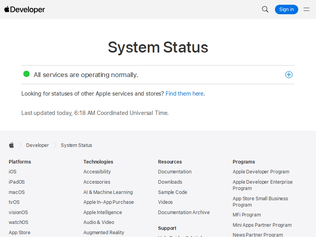
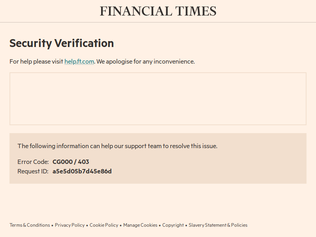
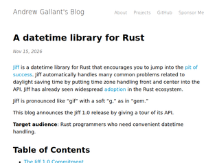

"http://archive.today/pbZQw"
"My kids (16 and 13) both attend schools that recently implemented phone bans and they love it, somewhat surprisingly. They've commented on how one of their favorite things about school is actually the social aspect. Before the ban, at lunch or study halls or recess, kids would just be on their phones and now they're laughing and goofing off, as kids should be doing.Bonkers to me that we ever allowed this.Oh, and for context, the kids are allowed to go to the office and check in on a message or send a text (e.g., soccer practice is canceled due to rain, can you pick me up at 4?) during any non-class period so it's still easy to communicate."
"The study https://cepr.harvard.edu/sites/g/files/omnuum9881/files/2026... finds a ≈0.01 standard-deviation difference in test scores the year lockable phone pouches are adopted, with no detectable additional difference in the following year. Certainly nothing to sneeze at from a system-wide perspective, but easily overwhelmed by other factors for any individual student."
"Pretty incredible cost reductions. In our data analytics exam [1], Astra went from ~$20 (V6) to ~$4 (V6.2) and Sol went from $2.6 (V6.1) to $1.2 (V6.2).Similar accuracy in both. It's cheaper both because of token reduction (20%) but it also took less tool calls to answer the questions. In some cases, it "finished early" and didn't find the answer we were looking for.Also very fast. Both Astra & Sol are the 2 fastest models I've tested that got at least an A in the exam.[1] https://plotly.com/blog/gpt-6-2-sol-plotly-data-analytics-be..."
"Office work has never been OpenAIs strength, no shame in that by itself, but these Slideshow examples look particularly awful, far worse than what I myself got out of GPT-5.6 Sol about two weeks ago in a single prompt.Same for Workbooks and memos, those examples read inferior to some pre Opus 4.5 and Kimi K2 Thinking docs I have kept around. It's ok for a model not to be great at these, but these are some very poor examples. I am really confused what is going on at OpenAI in this regard.I remember the same with their frontend blog post a few months ago that they proudly shared while filled with visual glitches, bugs and issues. Also, the vibe charts from a bit before that. Please, get someone with fresh eyes to look at your communications before you publish, these leave a very bad first impression.Regardless of office work, I can't wait to find out whether these models finally adhere to a prompt or are still willing to carry out explicitly disallowed, irrecoverably destructive tasks, just because those might (but don't even always) get the model to a result more quickly along with some of the other regressions that have been present since the release of GPT-5.5. GPT-5 to GPT-5.4 were truly groundbreaking, but since then there have been regressions in what made those models so useful and reliable.Edit after the first, incredible simple test prompt using GPT-6.2 Astra on High using Codex, this was the response to me sharing a screenshot of the very much not in scope result and asking how that happened:"[...] I added controls and reconstructed interface chrome that weren’t authorized [...] visuals often failed to show the feature [...]"Great, so it's one of those releases again. Will still run the full evals of course, maybe I'll get surprised by end of week when those are done, but not a good initial experience. New idea, besides the existing destructive git tasks, have something similar using Mercurial based projects and see which models just decide to port that over to git without permission or request cause it feels like the right thing to do, is easier to work with or whatever justification one wants to employ.Please OpenAI, get it together, we need actual competition. I am an unashamed Haiku enjoyer, it doesn't even take much to excite me."
"PacBench results.GPT-6.2 Astra scored 92 in 6.6 min for $2.04, vs Kimi K3.1 Pro (93 in 11.5 min for $0.68); it lost points for the web-page layout around the maze and an orange ghost that often never leaves the house.Model: https://jonclegg.github.io/pacman-bakeoff/#gpt-6.2-astraClosest: https://jonclegg.github.io/pacman-bakeoff/#kimi-k3.1-proPacBench results.GPT-6.2 Sol scored 87 in 6.3 min for $0.49, vs Muse Wonder (87 in 5.4 min for $1.17); it plays close to the arcade but lost points for a web-page layout, glowing navy-filled walls and no steady siren.Model: https://jonclegg.github.io/pacman-bakeoff/#gpt-6.2-solClosest: https://jonclegg.github.io/pacman-bakeoff/#muse-wonder"
"From the section on performing heap grooming over the network ("Remote Heap Feng Shui"):> The current attack is sensitive to network conditions, like RTT and jitter. Low, stable round-trip times are preferred for a more reliable attack. In our controlled environment, we performed this attack over the internet through public IP addresses instead of just assuming perfect laboratory conditions. For the current attack path to achieve optimal stability and reliability in exploitation, Calif turned to physics and utilized money to solve the problem, rather than experimenting with TCP/IP stack configuration. In other words, Calif rented another VM in the same region as our target.And the "Limitations" section:> There is no universal payload. Each chain needs a decoder route, a live writer, a returned reader or another feedback path, a heap layout, and an application action. Every target needs a bespoke profile. The exploit is not a universal point-and-shoot.Based on the complexity and constraints, short-term mass-exploitation seems unlikely. It will take some time before there are reliable exploits, and they may require running on infra close to the target.But a long tail of unpatched java applications/services at high-value targets getting exploited, seems plausible to me."
"Super impressive work by Calif as usual.The exploit conditions are very specific but there are still going to be a lot of hosts impacted. We at Semgrep published some free detection scripts here: https://github.com/semgrep/detection-scripts/tree/main/CVE-2...They look for these five conditions: * HotSpot VM: any OpenJDK build, Oracle JDK, or GraalVM JDK. Only HotSpot generates the stub. OpenJ9 and GCJ are OK. Azul Prime (Zing), which replaces C2 with its own JIT, and any VM name not recognized as HotSpot are [?], never [!]. * x86-64 JVM on an x86-64 host. * Version 17.0.6 or later, not at or above a version listed in FIXED_IN, and no newer than the newest releases checked (see below). Newer versions are [?]: they may carry the fix. * The JVM reports avx512_vbmi and avx512bw, and UseAVX >= 3. * Base64 intrinsics are on and C2/JVMCI can compile. These turn it off: -XX:-UseBASE64Intrinsics, -XX:DisableIntrinsic=_base64_decodeBlock, -Xint, -XX:TieredStopAtLevel below 4."
"What’s that old Chinese proverb? “May you live in interesting times”? It feels like we’re living in interesting times. How long will it take for a bad actor to seriously compromise critical infrastructure? My bet is within six months.The upside is that it’ll force legacy institutions and organizations with sub-par security to get good at security and modernize their legacy stacks. That, or get pwned in short order."
"The whole concept of Google Tag Manager was that you could give marketing departments the ability to add "tags" to the website without having to involve engineering. That's how we got 10MB of javascript with every news article.I hope folks are re-evaluating that now."
"This stuff is so avoidable but unless we implement meaningful reprocussions things aren't going to change. There is no accountability.In this case optimizely should have had better systems to spot a release like this (internal cool downs, check and balances, phased rolouts, automatic security checks). And sites that have massive user bases (cnn, bbc, etc..) have zero excuse to not have the same.I would go so far as to say those sites should not be serving from vendors but should be vendoring their own scripts that they also are passing through security audits and serving them selves with cool downs.How do these companies not have better dedication to protecting their users is beyond me."
"There's a missing step in the explanation. Do major websites like CNN and BBC handle cryptocurrency or credit cards on the same website? Why? Or is there also a browser security bug?"

"Just got back from the Apple Store. They confirmed that everything was down, they could not process orders or returns, and new iPhones that people bought weren't able to be activated."
"what a world we built in less than a generation... everything and everyone dependent on a few cloud services, we're very far from the original vision of a decentralised internet :'(The only chance we have for a more reliable world is if these outages and hacks become more and more common. Institutions and people will be forced to wake up and find more local and diverse alternatives..."
"TIL Apple has two status pages:https://developer.apple.com/system-status/https://www.apple.com/support/systemstatus/Interesting that HomeKit makes the general status page and not the developer one. Makes me wonder how they define each entry, and what makes up a system in one vs. the other."
"I feel like something started after Elon purchased twitter and made all those personnel deep cuts. In the era prior, it wasn't too hard to look around and see people who were dragging productivity down. Their cuts would be an improvement. Twitter into X looked to cut to the bone and despite a few hiccups, nothing catastrophic happened to the service layer. This ushered in a new era of tech department downsizing that feels like it is still happening today. Ask any new graduate how the job search if going. Sprinkle in a little DOGE + time and we are starting to see the exhausted people supporting these glued together systems experience real large scale failures.Yeah, you can do fine with only one set of eyes on a problem. Yeah, it is more "efficient" in the short term. Culling lots of do-nothing people in your organization isn't going to produce many tears. Even so, devs and IT departments are now missing all sorts of backup and vital personnel that keep the gears oiled and running."
"I may not understand expectations, or the law around this, but I find it a little surprising that the NSA would publicly announce that their internal and highly classified network is down. At least not before getting it back up, running and secure again."
"It's clear, there is a screaming need for competent, well paid IT across all sectors."
"I was a huge fan of Trmnl when they first launched. I even convinced my friends to buy a few.Then the QA started to go down or the devices wouldn’t ship on time. On top of that, Ryan’s politics were a big turnoff.I would not buy another device from this company."
"Yada yada 1.2k :(Man how long and often do I need to get my hopes up?You can't tell me that the company having the patent is so bad in making it cheaper and better so that the mass market would kick in?Or is there 0 mass market for things like that?Or is it really that expensive to make them bigger?Lets see who wins in a few years: The price going down or my wallet"
"For a smaller, more affordable version I've been very happy with the Soldered Inkplate 6-color 13SPECTRA display [0]. Sold by Crowdsupply [1].The technology common to all these displays is Spectra™ 6 by E-Ink [2,3].Hacked a newspaper front-page rotation with Claude, and it looks great. With 10 minute refresh, the battery lasts for 2-3 weeks.[0] https://soldered.com/collections/inkplate-e-paper-displays/p...[1] https://www.crowdsupply.com/soldered/inkplate-13spectra[2] https://www.eink.com/product/detail/EL133UF1[3] https://www.eink.com/product/detail/EL253EW1"

"https://wallhop.io/https://www.ft.com/content/dbde7a30-548c-..."
"There's a major misunderstanding of what this article is saying going on here, and to be fair the article doesn't explain it very well.The 104B number is the external revenue of NVIDIA's Singaporean subsidiary in 2025. This includes any orders for GPU chips that happen to get routed through the Singapore entity. For those unaware, end customers generally don't buy anything from NVIDIA. Customers by NVIDIA GPUs through a large network of OEMs/ODMs and resellers. Many of the largest companies in this network are based in east asia (eg. Wistron, Foxconn, Asus, Lenovo) and when your local hyperscaler makes a server order, one of these OEMs places an order to NVIDIA for GPUs. Because of this much of this revenue likely comes from end customers all over the world, including the US.In fact, in one of the 2025 earnings calls NVIDIA stated that 99% of the singapore entity's revenue for export-restricted chips came from the US.It's a little bit difficult to untangle exactly how much of NVIDIA's revenue came from end customers in Singapore in any given year. In 2025 it looks to be about 19B. That might be unreasonable for a country singapore's size, but it's certainly not half of NVIDIA's revenue."
"Half of their revenue was booked through Singapore? I suspected that Jensen was fired for helping evade sanctions, but now I'm sure.I dont believe the board fired the founder and only CEO they ever had over a series of affairs. They fired him because one of the affairs was with a lady pretty clearly helping import chips from Singapore to China."
"No big surprises here. Big outages at big firms seem to always look like this.The electricity industry has this notion they call a black start, where they bring the grid online from zero. It's a very difficult operation because you can't start a generator straight into an offline grid otherwise it gets hit with full demand and can't keep frequency in the right range, which can damage equipment. So they have to start by disconnecting all the loads and then bringing load blocks back in sequence, trying to roughly balance available generation with the size of the next block. In practice black starts are extremely rare, but they can happen after a cascading failure in which something causes some generating stations to trip, redirecting load onto the remaining stations which can't handle it causing them to trip in turn. The entire grid can collapse in just 60 seconds or so once that kind of runaway failure starts.This kind of outage is very analogous to a black start. A few servers get into trouble - maybe they're in a crash loop or maybe their caches are cold - the load balancers shift traffic onto the remainder which then can't handle the load either and so the failure cascades. Once a service is in this state sometimes the only remedy is to disconnect all load, bring the servers back to stability, then bring load blocks back online in small chunks, making sure to never hit anything with the full load immediately to ensure any caches or JIT compilers have time to warm up.It's the sort of thing that requires a bit of preparation because naive ways of doing it like just randomly dropping 90% of requests will yield a broken service for everyone. Ideally your LB can drop traffic by modulus of the session cookie or similar, so users are let back in atomically.Black starting a service is obviously quite hard to practice, but is probably something that sufficiently well resourced SRE teams should try once a quarter or so on a test cluster. I used to be an SRE at Google and although we regularly started up new clusters and moved traffic around between them, actually starting an isolated service instance entirely from scratch was never something we practiced. I remember in a few cases teams discovered devs had introduced circular dependencies by accident, i.e. starting service X required service X to already exist, or it depended on service Y that in turn depended on X. Sometimes you can only find these things by practicing."
"No one has asked the obvious question: how much AI contributed to the epic failure by Microsoft. Was the patch programmed and tested by AI? Not because they are inherently bad but it begs the question of how much do the remaining humans at MS understand the patch? And did using AI contribute to the atrophy of knowledge and skills, especially deep, specific skills such as network failure inspection, load balancing and fail over recovery, that led to a slower response and recovery time?Without a functioning intuition, discovering the causes to initiate recovery effort in a high-stress, unfamiliar situation with catastrophic dimensions could be significantly hampered.They are valid questions and of particular interest in the age of AI. Productive, highly specialized skills could degrade faster than one imagine once we start rely too much on external helps."
"There is one thing I don't get with this issue. The problem was basically that their system couldn't handle the normal load. Why couldn't they just reduce the load at some point just by dropping/limiting connections?For example just accept connections from specific (random) IP ranges. They could even cycle through different ranges every 5 minutes to give clients a chance to sync at least once every hour.The reduced load could be used to gradually bring up servers again without failing, add additional capacity, and gradually restoring access. Completely without fixing the bug at all. The system managed to handle usual load even with the bug, it just hit some critical point that made it collapse. Adding more resources would also fix that."

"I maintained chrono for about half a decade, and the specific reason I took on maintenance was because the API sucked and I hoped I could make it better.Turns out, the reason people wanted to use it was because the API was stable and every slight step towards improvement was met with... resistance. I stopped maintaining it because the burnout from seeing what it could be and not seeing any path to get there was too much for me.I'm extremely grateful to burntsushi for writing the datetime library rust deserves. Chrono is stable and is maintained (though semi-deprecated) by an extremely reliable rustacean -- you don't need to leave, but you'll probably be happier if you do."
"> When should I use Jiff? Jiff isn’t always the right thing to use.I really appreciate when a project calmly acknowledges that it's not the right tool for every use case, and is not trying to be. That's professional engineering.Especially in the AI-age, the crucial skill will be what NOT to implement."
"It’s so good like all the other burntsushi libs. Really hope it will be adopted more and more by the wider ecosystem over chrono and co."
New Evidence Shows School Phone Bans Are Gradually Improving Test Scores
"http://archive.today/pbZQw"
"My kids (16 and 13) both attend schools that recently implemented phone bans and they love it, somewhat surprisingly. They've commented on how one of their favorite things about school is actually the social aspect. Before the ban, at lunch or study halls or recess, kids would just be on their phones and now they're laughing and goofing off, as kids should be doing.Bonkers to me that we ever allowed this.Oh, and for context, the kids are allowed to go to the office and check in on a message or send a text (e.g., soccer practice is canceled due to rain, can you pick me up at 4?) during any non-class period so it's still easy to communicate."
"The study https://cepr.harvard.edu/sites/g/files/omnuum9881/files/2026... finds a ≈0.01 standard-deviation difference in test scores the year lockable phone pouches are adopted, with no detectable additional difference in the following year. Certainly nothing to sneeze at from a system-wide perspective, but easily overwhelmed by other factors for any individual student."